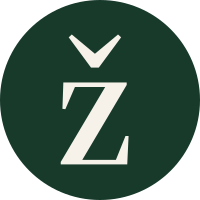

Odabrana studija B · Izvorna vektorska slova i sužen akcenat nad Ž.


Riječ: najmanje 120 px. Mali znak: 16, 24 i 32 px. Slobodan prostor: najmanje visina tačke na slovu i.
| Djela i naslovi | Source Serif 4 |
| Navigacija i redakcija | Source Sans 3 |
| Karakteri | Ž ž Č č Ć ć Š š Đ đ Ś ś Ź ź |
Sačuvati caron. Ne dodavati okvir, pejzaž ili posebno pero. Ne mijenjati boje umjetničkog djela. SVG datoteke su nezavisne od fontova.